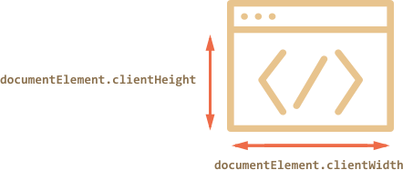

How to find out the width of the browser window? How to get the full height of the document, including the scrolled out part? How to scroll the page using JavaScript?
From the DOM point of view, the root document element is document.documentElement. That element corresponds to <html> and has all the properties described in the previous chapter. For some cases we can use it, but there are additional methods and peculiarities important enough to consider.
Properties clientWidth/clientHeight of document.documentElement is exactly what we want here:
document.documentElement.clientWidth and document.documentElement.clientHeight returns the width and height without the scrollbar. It means the space which are available for content. These two properties includes padding though.
These two properties return width and height including scrollbar.
In most cases we need the available window width: to draw or position something. That is: inside scrollbars if there are any. So we should use documentElement.clientHeight/Width.
<button onclick="getDimension()">Click</button>
<p style="font-weight: bold;">Output : </p>
<p id="output1"></p>
function getDimension(){
var output = document.getElementById("output1");
output.innerHTML = "clientWidth = " + document.documentElement.clientWidth+"
"+"innerWidth = " + window.innerWidth;
}
Output :
We already know what scrollWidth and scrollHeight are for element node. It's the same thing for window too. It returns the clientWidth/clientHeight including scrolled out part. It means it returns the full width/height that the content would take without the scroll plus the padding.
But, there is a problem, again cross-browser issue. In some browsers, if there is no scrollbar, they returns scrollWidth/scrollHeight which are even less than clientWidth/clientHeight. Which are nonsense for regular elements. While other browser returns clientWidth/clientHeight which are equals to scrollWidth/scrollHeight.
To have a reliable full window size, we should take the maximum of these properties:
let scrollHeight = Math.max(
document.body.scrollHeight, document.documentElement.scrollHeight,
document.body.offsetHeight, document.documentElement.offsetHeight,
document.body.clientHeight, document.documentElement.clientHeight
);
alert('Full document height, with scrolled out part: ' + scrollHeight);
These two properties are used to measure how much we have scrolled the document. Well that's what we have learnt in the previous chapter.
Most browsers provide documentElement.scrollLeft/Top for the document scroll, but Chrome/Safari/Opera have bugs and we should use document.body instead of document.documentElement there.
Using scrollLeft/scrollTop property on document.documentElement for some browsers and on document.body for other browsers are not efficent. Luckily, we don’t have to remember these peculiarities at all, because of the special properties window.pageXOffset/pageYOffset:
alert('Current scroll from the top: ' + window.pageYOffset);
alert('Current scroll from the left: ' + window.pageXOffset);
These are read-only properties.
Please note: top-level geometry properties may work a little bit differently when there’s no in HTML. Odd things are possible. In modern HTML we should always write DOCTYPE. Generally that’s not a JavaScript question, but here it affects JavaScript as well.
Regular elements can be scrolled by changing scrollTop/scrollLeft. You can also use this property on document.documentElement in some browsers while document.body in other browsers to scroll the whole page. But it has a cross browser issue again. To solve this we can use the following properties and methods -
The method scrollTo(pageX,pageY) scrolls the page relative to the document top-left corner. It’s like setting scrollLeft/scrollTop. The first argument pageX specifies scrollLeft and pageY specifies scrollTop.
<button onclick="scrollToSpecificPoint()">Scroll To 100px</button>
<script type="text/javascript">
function scrollToSpecificPoint(){
window.scrollTo(0, 100);
}
</script>
In the above example, as we don't have horizontal scrollbar, the first argument is 0.
This method doesn't except negative value.
The method scrollBy(x,y) scrolls the page relative to its current position. For instance, scrollBy(0,10) scrolls the page 10px down.
<button onclick="scrollByExample()">Scroll 10px to Top</button>
<script type="text/javascript">
function scrollByExample(){
window.scrollBy(0, 10);
}
</script>
You can also use negative value to scroll to bottom.
<button onclick="scrollByExampleNegative()">Scroll 10px to Top</button>
<script type="text/javascript">
function scrollByExampleNegative(){
window.scrollBy(0, -10);
}
</script>
You can also provide negative value for the first argument. Positive value means it will scroll to left. And negative value means it will scroll to right.
The call to elem.scrollIntoView(top) scrolls the page to make elem visible. It has one argument:
<button id="topButton" onclick="scrollIntoViewTop()">Scroll Into View Top</button>
<button id="bottomButton" onclick="scrollIntoViewBottom()">Scroll Into View Bottom</button>
<script type="text/javascript">
function scrollIntoViewBottom(){
bottomButton.scrollIntoView(false);
}
function scrollIntoViewTop(){
topButton.scrollIntoView(true);
}
</script>
Sometimes we need to make the document “unscrollable”. For instance, when we need to cover it with a large message requiring immediate attention, and we want the visitor to interact with that message, not with the document.
To make the document unscrollable, its enough to set document.body.style.overflow = "hidden". The page will freeze on its current scroll.